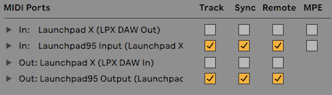

Installation
Supported hardware and software
Ableton Live 11 or later (Live 11 and 12; Mac or Windows; Intro, Standard or Suite). Launchpad95 now uses the note API that Live 11 introduced, so it no longer runs on Live 9 or 10: for those, download the archived Live 9/10 release.
Supported Launchpads:
- Launchpad (the original, MK1)
- Launchpad S
- Launchpad Mini
- Launchpad MK2 (RGB)
- Launchpad Mini MK2 (RGB)
- Launchpad Mini MK3 (RGB)
- Launchpad X (RGB)
Launchpad Pro: see Launchpad Pro95Launchpad Pro MK2is not supported
Setup
- Download Launchpad95.zip and unzip it.
- Copy the Launchpad95 folder into your Live User Library, in a folder named Remote Scripts (create it if needed). In Live's browser, right-click the User Library and choose Show in Finder / Show in Explorer to find it. The
.pyfiles must be directly insideUser Library/Remote Scripts/Launchpad95/.
- Plug in your Launchpad and start Live (restart it if it was running, Live reads the scripts at start).
- Open Settings (Preferences on older Lives) → Link, Tempo & MIDI. In a free Control Surface slot choose Launchpad95, and as Input and Output choose your Launchpad.

The Launchpad X and Mini MK3 show two ports each: choose the MIDI port for both Input and Output, LPX MIDI on the Launchpad X and LPMiniMK3 MIDI on the Mini MK3, not the DAW port.
- In the MIDI Ports list below, turn on Track, Sync and Remote for the Launchpad ports used by Launchpad95 (Track is needed for the note feedback of the Instrument Controller).

- Live Suite users: the
M4LDevicefolder holds an on-screen display, a Max for Live device that shows what you would see on a Push screen (see below).